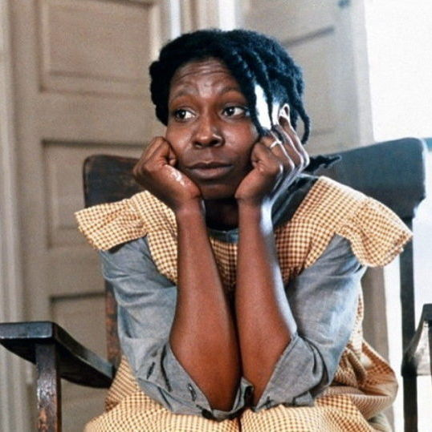
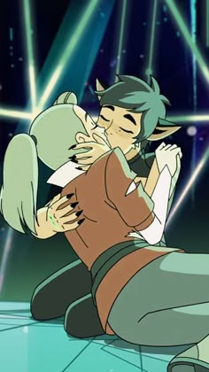

Personagens Lésbicas Canônicas
Representatividade real importa. Abaixo estão personagens da literatura, televisão, animações e jogos cujas identidades lésbicas são explicitamente confirmadas pelas próprias obras ou criadores.
Celie

O Color Púrpura (Livro/Filme)
A icônica protagonista da obra prima de Alice Walker encontra o amor verdadeiro, cura emocional, autoconhecimento e emancipação através de seu relacionamento romântico profundo e canônico com a cantora Shug Avery.
Ellie Williams
The Last of Us (Jogo/Série)
Uma das personagens mais importantes da história dos videogames. Sua sexualidade é parte central de seu desenvolvimento e da narrativa canônica explorada na expansão Left Behind (com Riley) e em Part II (com Dina).
Amity Blight

The Owl House (Disney)
Confirmada oficialmente pela criadora Dana Terrace como lésbica, a jovem bruxa protagoniza uma das histórias de romance sáfico mais explícitas, saudáveis e celebradas da história recente das animações infantojuvenis ao lado de Luz Noceda.
Alex Danvers
Supergirl (Série DC)
A cientista e diretora da DEO protagonizou uma aclamada e canônica jornada de descoberta pessoal na vida adulta, culminando em seu casamento com Kelly Olsen e se tornando um enorme ícone de representatividade na TV aberta.
Adora & Felina

She-Ra e as Princesas do Poder
A conexão amorosa entre a heroína Adora e a anti-heroína Felina move todo o enredo da animação produzida pela Netflix. O laço sáfico romântico entre as duas é a chave canônica que salva o universo no clímax final da série.
Robin Buckley

Stranger Things (Netflix)
Introduzida na 3ª temporada, a personagem conquista o público e se assume abertamente lésbica para Steve Harrington em uma das scenes de diálogo emocionalmente mais honestas e importantes da cultura pop recente.